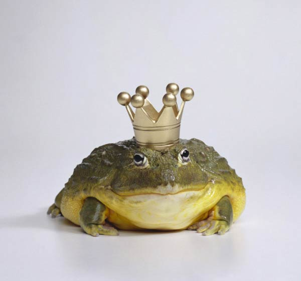

Жабы
Жабы (лат. Bufonidae) — семейство бесхвостых земноводных, единственное, в котором все представители называются «жабами», хотя некоторые виды можно назвать лягушками (например, ателопов). Жабы отличаются отсутствием зубов в верхней челюсти, вполне развитым слуховым аппаратом, сильно развитыми околоушными кожными железами и треугольными, плоскими отростками крестцовых позвонков. Полезны истреблением насекомых и моллюсков.

Стили жаб
Веселая жабка
Грустная жабка
Жаба в шляпке
Виды жаб
- Дальневосточная жерлянка
- Краснобрюхая жерлянка
- Обыкновенная чесночница
- Сирийская чесночница
- Серая жаба
- Кавказская крестовка
- Зеленая жаба
- Камышовая жаба
- Монгольская жаба
- Обыкновенная квакша
Факты о жабах:
По способу питания жабы являются типичными хищниками. Основу их рациона составляют мелкие беспозвоночные животные, к которым относятся бабочки, улитки, черви, насекомые и их личинки, а также мальки рыб. В меню крупных особей могут входить небольшие грызуны, ящерицы и лягушки. Наибольшую активность жабы проявляют в сумеречное и ночное время. На жертву нападают из засады, реагируя на движение будущей добычи. Хотите узнать ещё 49 интересных фактов о жабах? Жмите кнопку "Подробнее"!